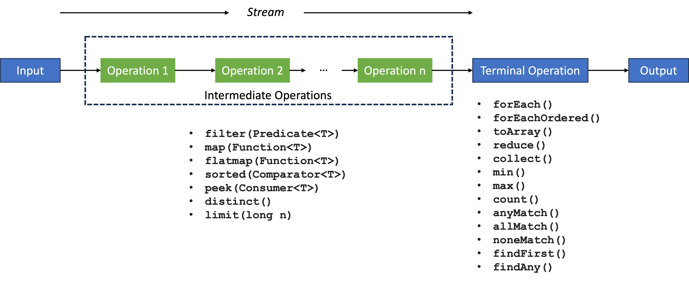

Streams¶
Die Java Streams API ermöglicht die Erzeugung, Manipulation und Verwendung eines "Stroms" von Objekten. Während Collections zum Speichern von Objekten verwendet werden, wird die Java Streams API zur Verarbeitung dieser Objekte verwendet, speichert die Objekte selbst jedoch nicht.
- Ein Stream ist keine Datenstruktur, sondern ein Stream erhält Input von Collections, Arrays, Dateien usw.
- Streams verändern nicht die Datenstruktur, aus der sie stammen, sondern erzeugen ein Resultat, indem Operationen verkettet werden.
- Intermediate Operations erzeugen selbst wieder einen Stream. Dadurch können intermediate operations verkettet werden.
- Terminal Operations sind am Ende eines Streams und erzeugen das Resultat.

Es gibt also zwei Arten von Operationen in Streams
- Terminal Operations und
- Intermediate Operations.
| intermediate operations | terminal operations |
|---|---|
| return Stream | return non-stream Werte |
| können verkettet werden | können nicht verkettet werden |
| eine Stream-Pipeline kann mehrere intermediäre Operationen enthalten | eine Stream-Pipeline enthält genau eine terminal Operation am Ende. |
| intermediäre Operationen werden ausgeführt, wenn die terminale Operation aufgerufen wird (lazy loading) | terminale Operationen triggern die Abarbeitung des Streams (eagerly loaded) |
| produzieren kein finales Ergebnis | produzieren das finale Ergebnis der Stream-Pipeline |
Beispiele: filter(), map(), distinct(), sorted(), limit(), skip() |
Beispiele: forEach(), toArray(), reduce(), collect(), min(), max(), count(), anyMatch(), allMatch(), noneMatch(), findFirst(), findAny() |
Bevor wir uns die einzelnen Operationen näher anschauen, betrachten wir zunächst einige Beispiele, um eine Gefühl für Streams zu bekommen:
Maximum einer Liste von Zahlen berechnen¶
List<Integer> age = Arrays.asList(12, 4, 16, 5, 27);
int maxAge = age.stream()
.mapToInt(Integer::intValue)
.max()
.orElse(-1);
System.out.println("Max age is: " + maxAge); // 27
Produkt einer Liste von Zahlen berechnen¶
List<Integer> numList = Arrays.asList(1, 2, 3, 4, 5, 6, 7);
int product = numList.stream()
.reduce(1, (a, b) -> a * b);
System.out.println("Product: " + product); // 5040
Doppelungen in einer Liste von Zahlen entfernen¶
List<Integer> age = Arrays.asList(12, 22, 12, 27, 31, 45, 31, 31, 51);
List<Integer> distinctAge = age.stream()
.distinct()
.collect(Collectors.toList());
System.out.println("Distinct Age List: " + distinctAge); // [12, 22, 27, 31, 45, 51]
Summe aller geraden Zahlen aus einer Liste berechnen¶
List<Integer> numList = Arrays.asList(1, 2, 3, 4, 5, 6, 7, 8, 9);
int evenSum = numList.stream()
.filter(n -> n%2 == 0)
.mapToInt(Integer::intValue)
.sum();
System.out.println("Sum of even numbers: " + evenSum); // 20
Summe und Durchschnitt einer Liste von Zahlen berechnen¶
List<Integer> numList = Arrays.asList(1, 2, 3, 4, 5, 6, 7);
int sum = numList.stream()
.mapToInt(Integer::intValue)
.sum();
double average = numList.stream()
.mapToDouble(Integer::doubleValue)
.average()
.getAsDouble();
System.out.printf("Sum : %d and Average: %f",sum,average); // 28 and 4.0
Streams erzeugen¶
stream()¶
In allen obigen Beispielen werden die Streams mithilfe von stream() erzeugt. Diese Methode wird durch das Interface Collection zur Verfügung gestellt und lässt sich immer dort anwenden, wo aus einer Collection (List, Set, Map, ...) ein Stream erzeugt werden soll. Ein einfaches Beispiel (sihe aber auch oben) ist
List<String> l1 = List.of("eins", "zwei", "drei", "vier", "fuenf");
Stream<String> s1 = l1.stream();
s1.forEach(System.out::println); // eins \n zwei \n drei \n vier \n fuenf \n
Die Methode stream() existiert nicht nur für Collections, sondern auch für Arrays. Dort ist sie aber eine statische Methode, die ein Array erwartet:
Neben stream() gibt es noch weitere Stream-erzeugende Methoden, die wir hier kurz betrachten wollen:
Stream.of()¶
Die statische of()-Methode aus Stream erwartet ein oder mehrere Elemente, die als Stream zurückgegeben werden, z.B.:
Stream<String> s2 = Stream.of("eins", "zwei", "drei", "vier", "fuenf");
s2.forEach(System.out::println); // eins \n zwei \n drei \n vier \n fuenf \n
Stream.generate()¶
Die statische generate()-Methode aus Stream erwartet einen Supplier und erzeugt daraus einen undendlichen Stream, z.B.:
Random random = new Random();
Stream<Integer> s3 = Stream.generate(random::nextInt);
s3.forEach(System.out::println); // hoert nicht auf !!!
Eine einfache Möglichkeit, die Anzahl der erzeugten Objekte zu begrenzen, ist die Verwendung der Methode limit(long) aus Stream, z.B.:
Random random = new Random();
Stream<Integer> s3 = Stream.generate(random::nextInt).limit(10);
s3.forEach(System.out::println); // 10 zufaellig erzeugte int-Werte
Stream.iterate()¶
Die statische iterate()-Methode aus Stream erwartet zwei Parameter: einen sogenannten seed und eine Funktion f (einen UnaryOperator aus java.util.function). Die Idee ist, dass iterativ die Funktion f auf seed angewendet wird, d.h.:
f(seed),f(f(seed)),f(f(f(seed))),- ...
Stream<Integer> s4 = Stream.iterate(0, n -> n + 2);
s4.forEach(System.out::println); // hoert nicht auf, gerade positive Zahlen zu erzeugen !!!
Auch hier kann z.B. wieder limit(long) helfen, um den Stream zu begrenzen:
Stream<Integer> s4 = Stream.iterate(0, n -> n + 2).limit(10);
s4.forEach(System.out::println); // 0 2 4 6 8 10 12 14 16 18
Intermediate Operations¶
Wir haben in den Beispielen bereits einige Beispiele für intermediate operations gesehen. Folgende Tabelle gibt einen Überblick über einige der meistverwendeten intermediate operations. Intermediate Operations
- können miteinander "verkettet" werden,
- erwarten einen Stream und erzeugen einen einen Stream, d.h. sie transformieren einen Stream in einen anderen.
| Operation | Bedeutung | Wirkung |
|---|---|---|
map(Function mapper) |
Wendet auf alle Elemente (Objekte) des Streams die mapper-Funktion an. |
Ändert die Anzahl der Objekte des Streams nicht. |
filter(Predicate predicate) |
Filtert aus einem Stream alle die Objekte, für die predicate den Wert true hat. |
Ändert die Anzahl der Objekte und gibt nur die Objekte als Stream weiter, für die das predicate gilt. |
sorted(Comparator comparator) |
Sortiert alle Elemente (Objekte) eines Streams wie durch comparator vorgegeben. Gibt es auch als sorted(), dann wird Comparable genutzt. |
Anzahl der Objekte bleibt gleich, Ausgabestream sortiert. |
distinct() |
Entfernt alle doppelten Elemente (Objekte) aus dem Stream. Doppelungen werden mittels equals() erkannt. |
Ändert die Anzahl der Objekte, jedes Objekt kommt im Ausgabestream nur noch einmal vor. |
peek(Consumer action) |
Wendet eine action auf alle Elemente (Objekte) eines Streams an. Im Unterschied zu map() werden hier die Elemente nicht verändert. |
Ändert die Anzahl der Elemente nicht. |
flatMap(Function mapper) |
Wird typischerweise dafür eingesetzt, um aus einem Stream von Collections einen Stream aller Elemente dieser Collections zu erzeugen. | Ändert nicht die Gesamtanzahl der involvierten Objekte. Aus einem Collections-Stream wird eine Elemente-Stream. |
Wir betrachten die genannten intermediären Operationen an Beispielen, um ein Verständnis darüber zu erlangen:
map(Function mapper)¶
Die Methode map() erwartet einen Stream und gibt einen Stream mit gleich vielen Elementen weiter, ersetzt jedoch alle eingehenden Elemente unter Anwendung einer Funktion:
Was wird ausgegeben?
Was wird ausgegeben?
Was wird ausgegeben?
Was wird ausgegeben? - Beachten Sie die Reihenfolge der Ausgaben!
public record Rectangle(int width, int length)
{
public int area()
{
return this.width * this.length;
}
}
Set<Rectangle> rectangles = new HashSet<>();
rectangles.add(new Rectangle(1, 2));
rectangles.add(new Rectangle(3, 2));
rectangles.add(new Rectangle(1, 4));
rectangles.add(new Rectangle(3, 4));
rectangles.add(new Rectangle(2, 5));
rectangles.add(new Rectangle(4, 2));
rectangles.stream()
.peek(s -> System.out.println(s.length() + " x " + s.width() + " = " + s.area()))
.map(x -> x.area())
.peek(r -> System.out.println(r))
.filter(x -> x < 5)
.forEach(System.out::println);
filter(Predicate predicate)¶
Die Methode filter() erwartet einen Stream und gibt einen Stream weiter, lässt jedoch nur die Elemente durch, für die das predicate den Wert true ergibt. Die Elemente selbst bleiben unverändert:
Was wird ausgegeben?
Was wird ausgegeben?
Was wird ausgegeben?
sorted(Comparator comparator)¶
Es gibt auch eine Methode sorted(). Diese kann auf Klassen angewendet werden, die das Comparable-Interface implementiert haben (z.B. String, alle Wrapper-Klassen usw.). Es wird die compareTo()-Methode verwendet, um die Elemente zu sortieren. Mit der Methode sorted(Comparator comparator) kann ein eigener Comparator implementiert werden. Dabei handelt es sich um ein Functional Interface mit der SAM int compare(T o1, T o2).
Es gibt verschiedene Möglichkeiten, Comparator anzuwenden (siehe auch Übung 9). Eine ist, die statischen Methoden des Interfaces zu verwenden, z.B. Comparator.comparingInt(ToIntFunction keyExtractor) (es gibt auch comparingDouble(), comparingLong()):
Was wird ausgegeben? - Beachten Sie die Reihenfolge der Ausgaben!
public record Rectangle(int width, int length)
{
public int area()
{
return this.width * this.length;
}
}
Set<Rectangle> rectangles = new HashSet<>();
rectangles.add(new Rectangle(1, 2));
rectangles.add(new Rectangle(3, 2));
rectangles.add(new Rectangle(1, 4));
rectangles.add(new Rectangle(3, 4));
rectangles.add(new Rectangle(2, 5));
rectangles.add(new Rectangle(4, 2));
rectangles.stream()
.sorted(Comparator.comparingInt(Rectangle::area))
.forEach(System.out::println);
Terminal Operations¶
Terminal Operations beenden die Stream-Pipeline (und triggern die Ausführung der gesamten Stream-Pipeline). Terminal Operations liefern den Wert der Berechnung. Zu einer Stream-Pipeline gehört genau eine terminale Operation (am Ende). Für die folgenden Beispiele nehmen wir an, wir hätten folgende Klasse (record) Person:
public record Person(String name, String stadt){
@Override
public String toString()
{
return String.format("%s aus %s", name, stadt);
}
}
und definieren folgende Liste personen:
List<Person> personen = List.of(
new Person("Alice", "Ankara"),
new Person("Alice", "Caracas"),
new Person("Barbara", "Bern"),
new Person("Barbara", "Damaskus"),
new Person("Conny", "Caracas"),
new Person("Conny", "Bern"),
new Person("Daniela", "Damaskus"),
new Person("Daniela", "Caracas"),
new Person("Elvira","Bern" ),
new Person("Elvira","Ankara" ),
new Person("Frieda", "Caracas"),
new Person("Gerda", "Ankara"),
new Person("Hannah", "Hanoi"),
new Person("Ina", "Islamabad"),
new Person("Jana", "Hanoi")
);
Wir betrachten Beispiele einiger terminaler Operationen:
forEach(Consumer action)¶
Die forEach()-Methode kommt im Interface StreamforEach() erwartet einen Consumer, also eine Funktion, die ein Parameter erwartet und nichts zurückgibt (also z.B. System.out::println).
Da es sich bei personen um eine Liste handelt, können wir forEach() direkt für die Liste aufrufen, das hat dann aber nichts mit Streams zu tun (sondern mit Iterable):
Für Stream erhalten wir aber genau die gleiche Ausgabe:
personen.stream().forEach(System.out::println);
personen.stream().forEach(p -> System.out.println(p.name()));
Mit Streams sind wir dann aber flexibler für intermediate operations, z.B. um doppelte Namen herauszufiltern:
Werden doppelte Namen ausgegeben (J/N)?
reduce(T identity, BinaryOperator<T> accumulator)¶
Die Methode reduce() gehört zu den reduction operations (auch fold genannt). reduction operations erwarten eine Sequenz von Input-Elementen (einen Stream) und kombinieren diese zu einem einzigen Wert. Der reduce()-Methode wird eine Funktion (BinaryOperator) übergeben. Diese Funktion wird auf jedes einzelne Element angewendet und zu einem Result akkumuliert. Das Prinzip ist wie folgt:
T result = identity;
for (T element : this stream)
result = accumulator.apply(result, element)
return result;
Was wird ausgegeben?
Was wird ausgegeben?
collect(Collector<> collector)¶
Die Methode collect() gehört ebenfalls zu den reduction operations. Das Ergebnis von collect() ist typischerweise eine Collection.
Wir können mithilfe von collect() z.B. eine einfache Liste der Namen der Personen (siehe oben) erstellen:
Wir können auch angeben, dass eine Set erzeugt werden soll. Diese enthält (im Gegensatz zur Liste) keine Doppelungen:
Set<String> namensSet = personen.stream()
.map(p -> p.name())
.collect(Collectors.toCollection(TreeSet::new));
Erstellen Sie eine HashSet, die alle Städte aus personen enthält und geben Sie diese aus!
Unter Verwendung von Collector.groupingBy() kann eine Map erstellt werden, deren Schlüssel dem angegebenen groupingBy-Element entspricht:
Map<String, List<Person>> personenStadt
= personen.stream()
.collect(
Collectors.groupingBy(
Person::stadt
)
);
personenStadt.entrySet().stream().forEach(System.out::println);
Ausgabe:
Bern=[Barbara aus Bern, Conny aus Bern, Elvira aus Bern]
Caracas=[Alice aus Caracas, Conny aus Caracas, Daniela aus Caracas, Frieda aus Caracas]
Ankara=[Alice aus Ankara, Elvira aus Ankara, Gerda aus Ankara]
Hanoi=[Hannah aus Hanoi, Jana aus Hanoi]
Islamabad=[Ina aus Islamabad]
Damaskus=[Barbara aus Damaskus, Daniela aus Damaskus]
Das kann dann sogar nochmal beliebig verschachtelt werden, z.B.:
Map<String, Map<String, List<Person>>> personenStadtName
= personen.stream()
.collect(
Collectors.groupingBy(
Person::name,
Collectors.groupingBy(
Person::stadt
)
)
);
personenStadtName.entrySet().stream().forEach(System.out::println);
Ausgabe:
Barbara={Bern=[Barbara aus Bern], Damaskus=[Barbara aus Damaskus]}
Alice={Caracas=[Alice aus Caracas], Ankara=[Alice aus Ankara]}
Hannah={Hanoi=[Hannah aus Hanoi]}
Jana={Hanoi=[Jana aus Hanoi]}
Gerda={Ankara=[Gerda aus Ankara]}
Conny={Bern=[Conny aus Bern], Caracas=[Conny aus Caracas]}
Ina={Islamabad=[Ina aus Islamabad]}
Elvira={Bern=[Elvira aus Bern], Ankara=[Elvira aus Ankara]}
Frieda={Caracas=[Frieda aus Caracas]}
Daniela={Caracas=[Daniela aus Caracas], Damaskus=[Daniela aus Damaskus]}
Es wird also nach name gruppiert und in jeder Namensgruppe dann nochmal nach stadt. Um nur die Namen nach Städten zu gruppieren, kann bspw.
Map<String, List<String>> personenNameStaedte
= personen.stream()
.collect(Collectors.groupingBy(
Person::name,
Collectors.mapping(
Person::stadt,
Collectors.toList())));
personenNameStaedte.entrySet().stream().forEach(System.out::println);
Ausgabe:
Barbara=[Bern, Damaskus]
Alice=[Ankara, Caracas]
Hannah=[Hanoi]
Jana=[Hanoi]
Gerda=[Ankara]
Conny=[Caracas, Bern]
Ina=[Islamabad]
Elvira=[Bern, Ankara]
Frieda=[Caracas]
Daniela=[Damaskus, Caracas]
verwendet werden. Collector.groupingBy() erwartet also entweder
- 1 Parameter (
Function classifier), um in einerFunctionanzugeben, wonach gruppiert werden soll (z.B.Person::stadt) oder - 2 Parameter (
Function classifierundCollector downstream), um einerseits in einerFunctionanzugeben, wonach gruppiert werden soll und andererseits einen weiteren kaskadierendenCollectorfür eine "innere" Gruppierung anzugeben.
Es gibt noch eine Implementierung mit 3 Parametern (siehe Collectors), aber 1-2 genügen uns bereits  .
.
allMatch(Predicate<T> p), anyMatch(Predicate<T> p)¶
Den Methoden allMatch(Predicate p) und anyMatch(Predicate p) wird ein Predicate übergeben und sie geben ein boolean zurück. Ein Predicate ist eine Funktion über einen Parameter, die ein boolean zurückgibt.
Welchen Wert hat answer?
Welchen Wert hat answer?
Welchen Wert hat answer?
min(Comparator<T> c), max(Comparator<T> c)¶
Den Methoden min(Comparator<T> c) und max(Comparator<T> c) wird ein Comparator übergeben und sie geben das "kleinste" bzw. "größte" Element aus dem Stream zurück. Ein Comparator ist eine Funktion über zwei Parameter, die ein int zurückgibt. Die SAM des Interfaces Comparator ist compare(T o1, T o2) und hat die gleiche Bedeutung, wie compareTo() aus Comparable, d.h. wenn o1 "größer" ist als o2, dann ist der Rückgabewert von compare() > 0.
Beachten Sie, dass min() und max() tatsächlich ein Optionalnull sein. Wir müssen deshalb stets noch z.B. get() für das zurückgegebene Optional aufrufen. Diese Funktion gibt den Wert zurück, wenn er existiert (ansonsten wird eine NoSuchElementException geworfen).
Welchen Wert hat answer?
Welchen Wert hat answer?
Welchen Wert hat answer?
Welchen Wert hat answer?
sum(), average(), count()¶
Die Methoden sum(), average(), count() sind Methoden aus dem Interface IntStream. Die Methode count() gibt es aber auch bereits in Stream. Neben IntStream gibt es auch DoubleStream und LongStream. In allen drei Stream-Arten kommen die hier diskutierten Methoden vor. Wir zeigen aber alles am Beispiel von IntStream.
Aus einem Stream können wir mithilfe von mapToInt() oder flatMapToInt() einen IntStream erzeugen. Beide Methoden erwarten als Parameter eine ToIntFunction. Diese besitzt als SAM die Methode applyAsInt(T value) und gibt einen int zurück.
Die Methode sum() gibt ein int zurück, count() ein long und average() ein OptionalDouble, dessen double-Wert wir durch getAsDouble() erhalten können.
Welchen Wert hat answer?
Welchen Wert hat answer?
Typische Fehler mit Streams¶
Jetzt noch einige Empfehlungen, um typische Fehler mit Streams zu vermeiden (siehe z.B. hier).
Ein Stream ist nur einmal terminierbar¶
Jeder Stream kann nur einmal terminiert werden. Folgender Code führt deshalb zu einem Fehler:
Fehler
List<String> fruits = Arrays.asList("apple", "banana", "orange", "mango");
// create a stream
Stream<String> fruitStream = fruits.stream();
// count() is terminal operation - closes the stream
long count = fruitStream.count();
System.out.println("Number of fruits: " + count);
// try to reuse the same stream - this will fail!
List<String> upperCaseFruits = fruitStream
.map(String::toUpperCase)
.collect(Collectors.toList());
Es wird eine IllegalStateException geworfen:
Exception in thread "main" java.lang.IllegalStateException: stream has already been operated upon or closed
Richtig
List<String> fruits = Arrays.asList("apple", "banana", "orange", "mango");
// eigener Stream fuer count()
long count = fruits.stream().count();
System.out.println("Number of fruits: " + count);
// eigener Stream fuer collect()
List<String> upperCaseFruits = fruits.stream()
.map(String::toUpperCase)
.collect(Collectors.toList());
System.out.println("Uppercase fruits: " + upperCaseFruits);
Ausgabe:
Nebenläufiges Ändern während der Iteration¶
Wenn wir aus einer Collection einen Stream erzeugen, darf die Collection nicht geändert werden, während wir den Stream abarbeiten. Beispielsweise führt folgender Code zu einem Fehler:
Fehler
Es wird eine ConcurrentModificationException geworfen:
Richtig
List<Integer> numbers = new ArrayList<>(Arrays.asList(1, 2, 3, 4, 5));
// neue Collection mit den gewuenschten Aenderungen erzeugen
List<Integer> modifiedNumbers = numbers.stream()
.flatMap(number -> {
if (number % 2 == 0) {
return Stream.of(number, number * 2);
}
return Stream.of(number);
})
.collect(Collectors.toList());
System.out.println("Original numbers: " + numbers);
System.out.println("Modified numbers: " + modifiedNumbers);
Ausgabe:
Optionale Werte behandeln¶
Wenn wir keine Optional Werte behandeln, können wir NullPointerException oder NoSuchElementException riskieren:
Fehler
Es wird eine NoSuchElementException geworfen:
Exception in thread "main" java.util.NoSuchElementException: No value present
at java.base/java.util.Optional.get(Optional.java:xxx)
Richtig
List<String> names = Arrays.asList("John", "Jane", "Bob");
// orElse
String firstLongName = names.stream()
.filter(name -> name.length() > 10)
.findFirst()
.orElse("No long name found");
// orElseGet - returns String "Default name"
String computedName = names.stream()
.filter(name -> name.length() > 10)
.findFirst()
.orElseGet(() -> "Default Name");
// ifPresent - void, prints if present
names.stream()
.filter(name -> name.length() > 10)
.findFirst()
.ifPresent(name -> System.out.println("Found long name: " + name));
// orElseThrow - wirft eigene Exception
try {
String requiredName = names.stream()
.filter(name -> name.length() > 10)
.findFirst()
.orElseThrow(() -> new IllegalStateException("No long name found"));
} catch (IllegalStateException e) {
System.out.println("Handled exception: " + e.getMessage());
}
System.out.println("firstLongName : " + firstLongName);
System.out.println("computedName : " + computedName);
Ausgabe:
Handled exception: No long name found
firstLongName : No long name found
computedName : Default Name
Effiziente Operation für Collections verwenden¶
Die Verwendung ineffizienter Operationen für Collections kann zu schlechter Performanz führen. Ist nicht völlig falsch, aber der sinnvolle Einsatz von Operationen über Collections ist besser:
ineffizient
List<String> words = Arrays.asList("apple", "banana", "apple", "cherry", "banana");
// Inefficient way to count occurrences
Map<String, Long> wordCounts = words.stream()
.collect(Collectors.toMap(
word -> word,
word -> 1L,
(count1, count2) -> count1 + 1
));
wordCounts.entrySet().stream().forEach(System.out::println);
Ausgabe:
besser
List<String> words = Arrays.asList("apple", "banana", "apple", "cherry", "banana");
// Efficient counting using groupingBy
Map<String, Long> wordCounts = words.stream()
.collect(Collectors.groupingBy(
Function.identity(),
Collectors.counting()
));
// Efficient distinct collection
List<String> uniqueWords = words.stream()
.distinct()
.collect(Collectors.toList());
// Efficient grouping with downstream collector
Map<Integer, List<String>> wordsByLength = words.stream()
.collect(Collectors.groupingBy(
String::length,
Collectors.toList()
));
// Efficient partitioning
Map<Boolean, List<String>> partitioned = words.stream()
.collect(Collectors.partitioningBy(
word -> word.length() > 5
));
System.out.printf("%n%n----------- wordCounts ---------------%n%n");
wordCounts.entrySet().stream().forEach(System.out::println);
System.out.printf("%n%n----------- uniqueWords --------------%n%n");
uniqueWords.stream().forEach(System.out::println);
System.out.printf("%n%n---------- wordsByLength -------------%n%n");
wordsByLength.entrySet().stream().forEach(System.out::println);
System.out.printf("%n%n----------- partitioned --------------%n%n");
partitioned.entrySet().stream().forEach(System.out::println);
Ausgabe:
----------- wordCounts ---------------
banana=2
cherry=1
apple=2
----------- uniqueWords --------------
apple
banana
cherry
---------- wordsByLength -------------
5=[apple, apple]
6=[banana, cherry, banana]
----------- partitioned --------------
false=[apple, apple]
true=[banana, cherry, banana]
Beispiele Streams und Lambdas¶
Die folgenden Beispiele sind Medium: 50 Java 8 Lambda Snippets Every Developer Should Know entnommen. Da es ein member-only article ist, poste ich den Inhalt (hoffentlich legaler Weise  ) hier.
) hier.
Iterating List using Lambda¶
List<String> list = Arrays.asList("Java", "Spring", "Lambda");
list.forEach(item -> System.out.println(item));
Filtering a List with Lambda¶
List<String> list = Arrays.asList("Java", "JavaScript", "Python");
List<String> filteredList = list.stream()
.filter(s -> s.startsWith("J"))
.collect(Collectors.toList());
filteredList.forEach(System.out::println);
Sorting a List using Lambda¶
List<String> list = Arrays.asList("Java", "Lambda", "Kafka");
list.sort((s1, s2) -> s1.compareTo(s2));
list.forEach(System.out::println);
Using a Custom Functional Interface¶
@FunctionalInterface
interface Calculator {
int calculate(int a, int b);
}
public static void main(String[] args) {
Calculator add = (a, b) -> a + b;
Calculator multiply = (a, b) -> a * b;
System.out.println("Addition: " + add.calculate(5, 3));
System.out.println("Multiplication: " + multiply.calculate(5, 3));
}
Lambda with Map Iteration¶
Map<String, Integer> map = new HashMap<>();
map.put("Java", 8);
map.put("Spring", 5);
map.put("Lambda", 1);
map.forEach((key, value) -> System.out.println(key + ": " + value));
Lambda in Comparator¶
List<String> list = Arrays.asList("Java", "Lambda", "Kafka");
list.sort(Comparator.comparingInt(String::length));
list.forEach(System.out::println);
Method Reference with Lambda¶
Lambda with Optional¶
Optional<String> optional = Optional.of("Java");
optional.ifPresent(s -> System.out.println("Value is present: " + s));
Lambda with Predicate¶
Predicate<String> isEmpty = s -> s.isEmpty();
System.out.println(isEmpty.test("")); // true
System.out.println(isEmpty.test("Java")); // false
Lambda with BiFunction¶
BiFunction<Integer, Integer, Integer> add = (a, b) -> a + b;
System.out.println(add.apply(2, 3)); // 5
Lambda with Consumer¶
Consumer<String> print = s -> System.out.println(s);
print.accept("Hello, World!"); // Hello, World!
Lambda with Supplier¶
Lambda with Stream Sorted¶
List<String> list = Arrays.asList("Banana", "Pear", "Grapes");
list.stream()
.sorted()
.forEach(System.out::println);
Lambda with Stream Count¶
List<Integer> numbers = Arrays.asList(1, 2, 3, 4, 5);
long count = numbers.stream()
.count();
System.out.println("Count: " + count); // Count: 5
Lambda with Stream AnyMatch¶
List<String> list = Arrays.asList("Java", "Spring", "Lambda");
boolean containsJava = list.stream()
.anyMatch(s -> s.equals("Java"));
System.out.println("Contains 'Java': " + containsJava); // true
Lambda with Stream AllMatch¶
List<Integer> numbers = Arrays.asList(2, 4, 6, 8, 10);
boolean allEven = numbers.stream()
.allMatch(n -> n % 2 == 0);
System.out.println("All even: " + allEven); // true
Lambda with Stream NoneMatch¶
List<String> list = Arrays.asList("Java", "Spring", "Lambda");
boolean nonePython = list.stream()
.noneMatch(s -> s.equals("Python"));
System.out.println("Contains no 'Python': " + nonePython); // true
Lambda with Stream FindFirst¶
List<String> list = Arrays.asList("Java", "Spring", "Lambda");
Optional<String> first = list.stream()
.findFirst();
first.ifPresent(System.out::println); // Java
Lambda with Stream FindAny¶
List<String> list = Arrays.asList("Java", "Spring", "Lambda");
Optional<String> any = list.stream()
.findAny();
any.ifPresent(System.out::println);
Lambda for Summing Integers¶
List<Integer> numbers = Arrays.asList(1, 2, 3, 4, 5);
int sum = numbers.stream()
.mapToInt(Integer::intValue)
.sum();
System.out.println("Sum: " + sum); // Sum: 15
Lambda for Max Integer¶
List<Integer> numbers = Arrays.asList(1, 2, 3, 4, 5);
int max = numbers.stream()
.mapToInt(Integer::intValue)
.max()
.orElse(Integer.MIN_VALUE);
System.out.println("Max: " + max); // Max: 5
Lambda for Min Integer¶
List<Integer> numbers = Arrays.asList(1, 2, 3, 4, 5);
int min = numbers.stream()
.mapToInt(Integer::intValue)
.min()
.orElse(Integer.MAX_VALUE);
System.out.println("Min: " + min); // Min: 1
Lambda for Joining Strings¶
List<String> list = Arrays.asList("Java", "Spring", "Lambda");
String joined = list.stream()
.collect(Collectors.joining(", "));
System.out.println(joined); // Java, Spring, Lambda
Lambda for Joining Without Delimiter¶
List<String> list = Arrays.asList("Java", "Spring", "Lambda");
String joined = list.stream()
.collect(Collectors.joining());
System.out.println(joined); // JavaSpringLambda
Lambda with Stream MapToInt¶
List<String> list = Arrays.asList("Java", "Spring", "Lambda");
list.stream()
.mapToInt(String::length)
.forEach(System.out::println); // 4, 6, 6
Lambda with Stream Collect to Set¶
List<String> list = Arrays.asList("Java", "Spring", "Lambda", "Spring");
Set<String> set = list.stream()
.collect(Collectors.toSet());
set.forEach(System.out::println); // Java, Spring, Lambda
Lambda with Stream GroupingBy¶
List<String> list = Arrays.asList("Java", "Spring", "Lambda", "Java");
Map<String, Long> frequency = list.stream()
.collect(Collectors.groupingBy(s -> s, Collectors.counting()));
frequency.forEach((k, v) -> System.out.println(k + ": " + v));
// Java: 2, Spring: 1, Lambda: 1
List<String> list = Arrays.asList("Java", "Spring", "Lambda");
Map<Integer, List<String>> map = list.stream()
.collect(Collectors.groupingBy(String::length));
map.forEach((k, v) -> System.out.println(k + ": " + v));
// 4: [Java], 6: [Spring, Lambda]
Lambda with Stream PartitioningBy¶
List<Integer> numbers = Arrays.asList(1, 2, 3, 4, 5, 6, 7, 8, 9, 10);
Map<Boolean, List<Integer>> partitioned = numbers.stream()
.collect(Collectors.partitioningBy(n -> n % 2 == 0));
partitioned.forEach((k, v) -> System.out.println(k + ": " + v));
// true: [2, 4, 6, 8, 10], false: [1, 3, 5, 7, 9]List<Integer> numbers = Arrays.asList(1, 2, 3, 4, 5, 6, 7, 8, 9, 10);
Map<Boolean, List<Integer>> partitioned = numbers.stream()
.collect(Collectors.partitioningBy(n -> n % 2 == 0));
partitioned.forEach((k, v) -> System.out.println(k + ": " + v));
// true: [2, 4, 6, 8, 10], false: [1, 3, 5, 7, 9]
Lambda with Stream Counting¶
List<String> list = Arrays.asList("Java", "Spring", "Lambda");
long count = list.stream()
.collect(Collectors.counting());
System.out.println("Count: " + count); // Count: 3
Lambda with Stream SummarizingInt¶
List<Integer> numbers = Arrays.asList(1, 2, 3, 4, 5);
IntSummaryStatistics stats = numbers.stream()
.collect(Collectors.summarizingInt(Integer::intValue));
System.out.println("Sum: " + stats.getSum());
System.out.println("Average: " + stats.getAverage());
System.out.println("Max: " + stats.getMax());
System.out.println("Min: " + stats.getMin());
Lambda with Stream ToMap¶
List<String> list = Arrays.asList("Java", "Spring", "Lambda");
Map<String, Integer> map = list.stream()
.collect(Collectors.toMap(s -> s, String::length));
map.forEach((k, v) -> System.out.println(k + ": " + v));
// Java: 4, Spring: 6, Lambda: 6
Lambda for Creating a Stream¶
Lambda with Stream Limit¶
Stream<String> stream = Stream.of("Java", "Spring", "Lambda", "Kafka");
stream.limit(2)
.forEach(System.out::println); // Java, Spring
Lambda with Stream Peek¶
Stream<String> stream = Stream.of("Java", "Spring", "Lambda", "Kafka");
stream.peek(System.out::println)
.collect(Collectors.toList());
Lambda with Stream Distinct¶
List<String> list = Arrays.asList("Java", "Spring", "Java", "Lambda");
list.stream()
.distinct()
.forEach(System.out::println);
// Java, Spring, Lambda
Lambda with Stream FlatMap¶
List<List<String>> listOfLists = Arrays.asList(
Arrays.asList("Java", "Spring"),
Arrays.asList("Lambda", "Kafka")
);
listOfLists.stream()
.flatMap(List::stream)
.forEach(System.out::println);
// Java, Spring, Lambda, Kafka
Lambda with Stream Reduce¶
List<Integer> numbers = Arrays.asList(1, 2, 3, 4, 5);
int sum = numbers.stream()
.reduce(0, (a, b) -> a + b);
System.out.println("Sum: " + sum); // Sum: 15
Lambda with Stream Filter and Map¶
List<String> list = Arrays.asList("Java", "Spring", "Lambda");
list.stream()
.filter(s -> s.startsWith("J"))
.map(String::toUpperCase)
.forEach(System.out::println);
// JAVA
Lambda with Stream Sorted with Comparator¶
List<String> list = Arrays.asList("Java", "Spring", "Lambda");
list.stream()
.sorted((s1, s2) -> s2.compareTo(s1)) // reverse order
.forEach(System.out::println);
// Spring, Lambda, Java
Lambda with Stream Iterate¶
Lambda with Stream Generate¶
Lambda with Stream of Primitives¶
Lambda with Stream to Array¶
List<String> list = Arrays.asList("Java", "Spring", "Lambda");
String[] array = list.stream()
.toArray(String[]::new);
System.out.println(Arrays.toString(array));
// [Java, Spring, Lambda]